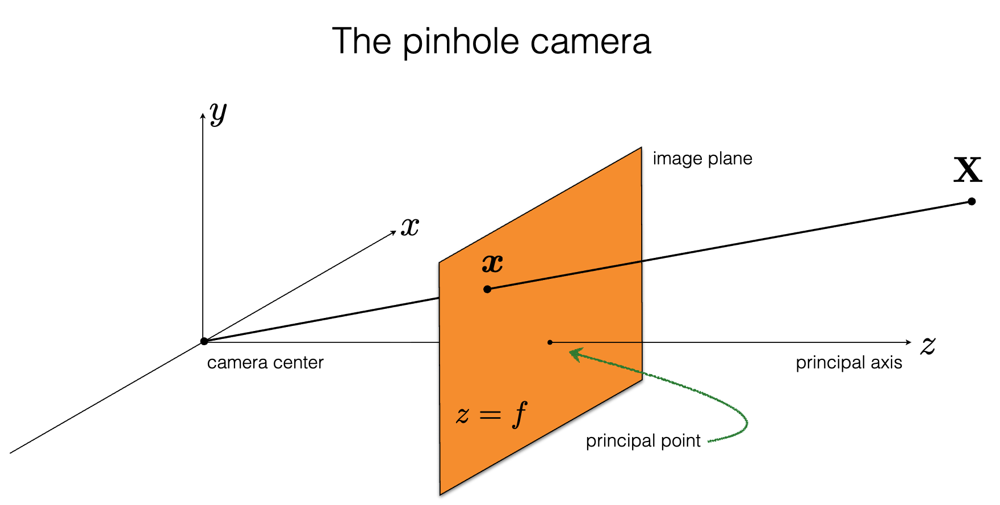
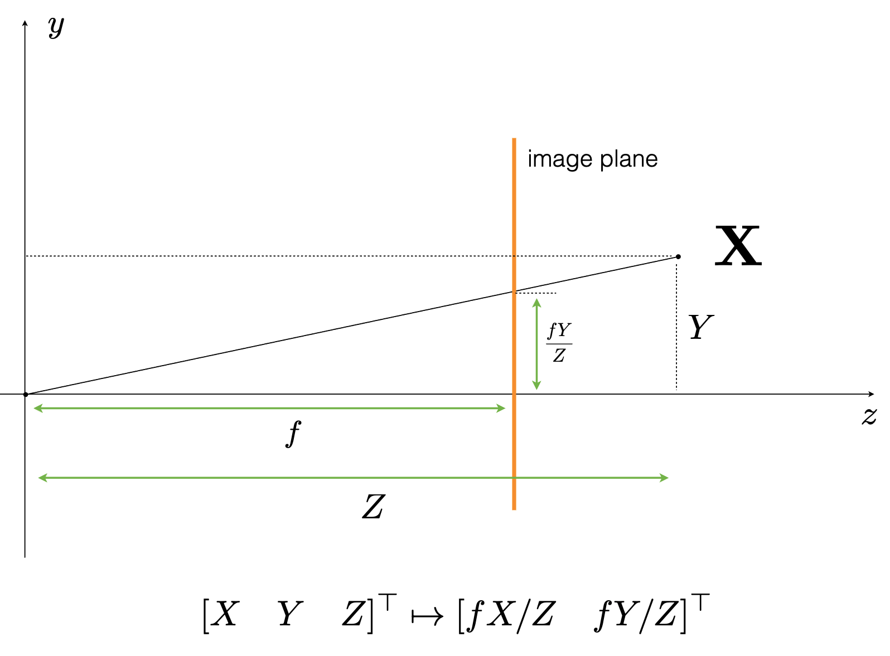
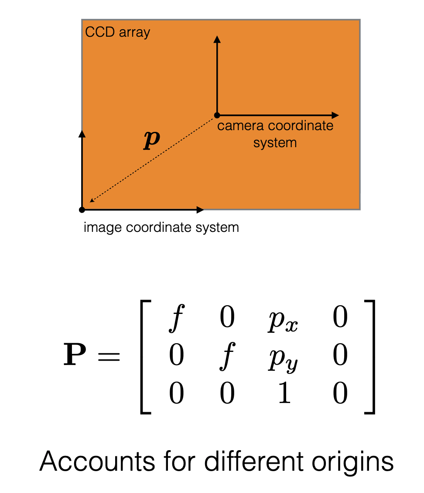
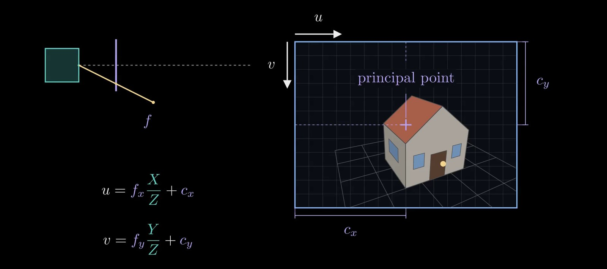
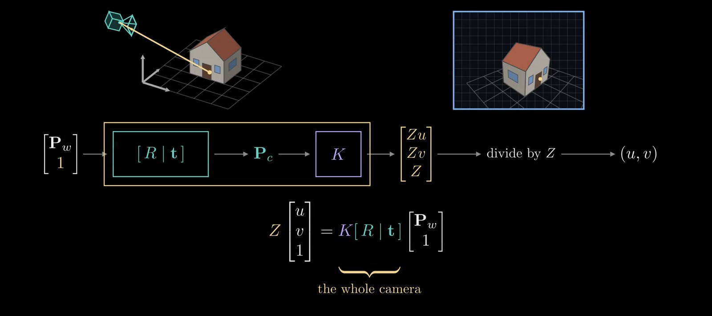

Camera Intrinsic Matrix
The camera intrinsic matrix is the fundamental mathematical bridge between the 3D physical world (in the camera's local coordinate system) and the 2D pixel grid of the image sensor. It is one half of the camera model: the extrinsic matrix first places the camera in the world, and the intrinsic matrix then turns what the camera sees into pixels.
In the context of computational imaging and hardware design, the intrinsic matrix defines the ideal paraxial geometric projection. Any physical diffraction, optical aberrations, or engineered meta-optics behaviors are modeled as deviations or convolutions on top of this baseline geometric mapping.
Video: Camera Intrinsics and Extrinsics: From a 3D Point to a Pixel, a four-minute visual explainer of this note and its companion, Camera Extrinsic Matrix.
Here is the mathematical breakdown of how it works.
1. The Pinhole Camera Model
To map a 3D point in space to a 2D pixel, we use the pinhole camera model: every ray from the scene passes through one point, the camera center (the pinhole), on its way to the image plane. Let's define our points:
- A 3D point in the camera's local coordinate frame: \(P_c = [X, Y, Z]^T\). The origin is the camera center, \(Z\) points straight out of the lens along the principal axis (so \(Z\) is the point's depth), \(X\) points right and \(Y\) points down, the directions in which pixel columns and rows are counted (the OpenCV convention).
- The corresponding 2D projection on the image plane (in pixel coordinates): \(p = [u, v]^T\), where \(u\) counts pixels to the right and \(v\) counts pixels down from the top-left corner of the image.

The image plane sits a focal length \(f\) in front of the camera center. (A real sensor sits behind the lens and records the picture upside down; putting the plane in front gives the same picture, upright, with simpler signs.) Similar triangles give where the ray crosses the plane: a point at depth \(Z\) that sits \(Y\) below the principal axis lands \(fY/Z\) below it, and likewise \(fX/Z\) to the side.

\[[X, Y, Z]^T \mapsto \left[ f\,\frac{X}{Z},\ f\,\frac{Y}{Z} \right]^T\]
Dividing by \(Z\) is what makes distant objects look small: a point twice as deep lands half as far from the principal axis. This perspective divide is non-linear in standard Cartesian coordinates. To make it linear, we express the points in homogeneous coordinates by appending a \(1\):
- \(P_{c,h} = [X, Y, Z, 1]^T\)
- \(p_h = [u, v, 1]^T\)
A homogeneous vector names the same point after scaling by any nonzero number: \([\lambda u, \lambda v, \lambda]^T\) and \([u, v, 1]^T\) are the same pixel. That lets the whole projection be one matrix product, with the division by depth left to the very end.
2. The Intrinsic Matrix (\(K\))
The intrinsic matrix \(K\) is a \(3 \times 3\) upper-triangular matrix that encodes the camera's internal parameters:
\[K = \begin{bmatrix} f_x & \gamma & c_x \\ 0 & f_y & c_y \\ 0 & 0 & 1 \end{bmatrix}\]
Here is what each parameter represents physically:
- \(f_x, f_y\) (Focal Lengths in Pixels): These are the products of the physical focal length \(f\) (e.g., in millimeters) and the scaling factors of the sensor \(m_x, m_y\) (pixels per millimeter). If the pixels are perfectly square, \(f_x = f_y\).
- \(f_x = f \cdot m_x\)
- \(f_y = f \cdot m_y\)
- \(c_x, c_y\) (Principal Point): This is the pixel where the principal axis (the camera's \(Z\) axis) pierces the image plane. Pixels are counted from the image's top-left corner, so adding \(c_x, c_y\) moves the origin from the principal point to that corner. Ideally, this is exactly the center of the sensor array (e.g., \([W/2, H/2]\) for a \(W \times H\) image), but manufacturing misalignments often shift it slightly.
- \(\gamma\) (Skew Coefficient): This accounts for non-rectangular pixels (where the \(x\) and \(y\) axes of the sensor are not perfectly orthogonal). In almost all modern digital cameras and imaging pipelines, \(\gamma = 0\).

These parameters belong to the camera itself, its lens and sensor, so they stay the same however the camera moves. Zooming or refocusing changes them; moving the camera does not.
3. The Projection Equation
To find where the 3D point \(P_c\) lands on the sensor, we multiply it by the intrinsic matrix. We drop the appended \(1\) from the 3D point since we are already in the camera coordinate frame (ignoring the extrinsic rotation/translation matrix for now; section 5 brings it back):
\[\lambda \begin{bmatrix} u \\ v \\ 1 \end{bmatrix} = \begin{bmatrix} f_x & \gamma & c_x \\ 0 & f_y & c_y \\ 0 & 0 & 1 \end{bmatrix} \begin{bmatrix} X \\ Y \\ Z \end{bmatrix}\]
Here, \(\lambda\) is the homogeneous scale factor from section 1; the last row of the product shows that it equals the depth \(Z\). If we perform the matrix multiplication, we get the following system of equations:
\[\lambda u = f_x X + \gamma Y + c_x Z\]
\[\lambda v = f_y Y + c_y Z\]
\[\lambda = Z\]
To get the final 2D pixel coordinates \((u, v)\), we perform the perspective divide (dividing by \(\lambda\), which is \(Z\)):
\[u = f_x \frac{X}{Z} + \gamma \frac{Y}{Z} + c_x\]
\[v = f_y \frac{Y}{Z} + c_y\]
Read from the inside out, the formula does three things: \(X/Z\) and \(Y/Z\) divide by depth, giving the direction of the ray through the point; \(f_x\) and \(f_y\) scale that direction into pixels; and \(c_x, c_y\) shift the origin from the principal point to the image's corner.

A worked example: a camera with square pixels, \(f_x = f_y = 800\) pixels, no skew, and its principal point at the center of a \(1280 \times 720\) image, \((c_x, c_y) = (640, 360)\), sees a point at \(P_c = [0.5, 0.25, 2]^T\) meters. Then \(u = 800 \cdot 0.25 + 640 = 840\) and \(v = 800 \cdot 0.125 + 360 = 460\). Moving the same point twice as far away, to \(Z = 4\), gives \((740, 410)\): half as far from the principal point, which is perspective at work.
4. From a Pixel Back to a Ray
Running the projection backwards recovers a direction, not a point:
\[\begin{bmatrix} X/Z \\ Y/Z \\ 1 \end{bmatrix} = K^{-1} \begin{bmatrix} u \\ v \\ 1 \end{bmatrix}\]
Every point \(Z \, K^{-1} [u, v, 1]^T\) with depth \(Z > 0\) lands on the same pixel, so one photo fixes directions but not distances. The depth has to come from somewhere else: a second view (triangulation, as in COLMAP), a depth sensor, or an object of known size such as a calibration checkerboard.
5. The Full Camera: Intrinsics and Extrinsics Together
Points usually start in a world coordinate system rather than the camera's. The extrinsic matrix, a rotation \(R\) and a translation \(t\), converts a world point \(P_w\) into camera coordinates, \(P_c = R\,P_w + t\). Appending a \(1\) to \(P_w\) turns that conversion into one matrix product, and the whole camera becomes a single \(3 \times 4\) matrix:
\[Z \begin{bmatrix} u \\ v \\ 1 \end{bmatrix} = K \, [R \mid t] \begin{bmatrix} P_w \\ 1 \end{bmatrix}\]
Read right to left: \([R \mid t]\) moves the point into the camera's frame (extrinsics), \(K\) maps it to its pixel times its depth (intrinsics), and dividing by the last entry, the depth \(Z\), gives the pixel. The product \(K[R \mid t]\) is the camera's projection matrix. 3D reconstruction tools store exactly these pieces: one \(K\) per physical camera, and an \(R\) and \(t\) for every photo.

6. Measuring \(K\): Calibration
\(K\) is not printed on the lens: \(f_x\) and \(f_y\) depend on the exact sensor and focus setting, and the principal point is rarely exactly at the image center. The standard way to measure it is Zhang's method. Print a checkerboard and measure its squares, so the physical position of every corner is known; photograph it from several angles; detect the corners in each photo; then solve for the single \(K\) shared by all photos, together with an \(R\) and \(t\) for each photo, so that the predicted corners land on the detected ones. The known square size is what anchors the result in real units. The steps are in Camera Extrinsic Matrix.
Real lenses also bend straight lines slightly, most visibly near the edges of the image. This lens distortion is the first of the deviations from the ideal pinhole model mentioned at the top: calibration measures it as a few extra coefficients applied to \(X/Z\) and \(Y/Z\) before \(K\), and undistorting an image removes it.